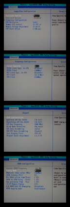

The ASUS K8V-e has a number of differant Overclocking options. Generally
this board is highly suitable for overclocking, yet the names of some

of the options are somewhat confusing, and spread out among differant
sections.
Many of these options are in the "Automatic" mode provided by ASUS.
In the next section, we will start by deactivating the automatic mode,
and set everything up to a baseline configuration in "Manual" mode, but
for now, we will explore the BIOS options.
First, under JumperFree, the CPU Multiplier can be raised or lowered,
but only raised for Athlon 64 FX processors. In addition voltages for
the memory and CPU can be confiqured here. Higher voltages are required
in order to provided overclocked CPU's with more power in order to function,
but create higher tempatures and even the slightest raises. The vcore
is computed in a somewhat strange way on the A8V-E and can be found by
taking the sum of the "Hammer Vid Control" + the CPU Vcore offset.
Under "Frequency Configuration", the clocks for both the PCI, and PCI
Express bus can, and should, be locked to 33 Mhz and 100 Mhz
respectively.
The system memory's starting frequency, and timings can be confiqured
in Chipset > DRAM Configuration. Also the speed of the HyperTransport
bus can be set to intial values before the overclock.
Motherboard Overclocking Options